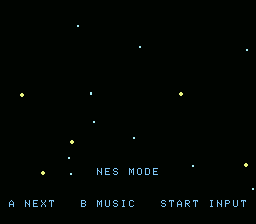

Game Boy, Game Boy Color and NES on the ESP32 "Cheap Yellow Display". Version 2.20.0. Send games over USB ↓
Pick the build for your exact board (the model number is printed on the back). The
ESP32-2432S024C (2.4", capacitive touch) is the main, tested board; the others are new and need testers.
2.4": the last letter says the touch type: C = capacitive, R = resistive.
2.8": R with one micro-USB port, the two-USB "CYD2USB", or C = capacitive (6-wire touch
ribbon instead of 4). 3.2" (ESP32-2432S032) and 3.5" (ESP32-3248S035): again C = capacitive,
R = resistive, N = no touch screen (needs a Bluetooth controller). JC2432W328C: a 2.8" capacitive
board with the model number on the back. Elecrow CrowPanel ESP32 2.4" / 2.8": one build for both
(the ESP32-WROOM versions, not the "Advance" ESP32-S3 ones). ESP32-2432S028R Plus (USB-C, ESP32-WROOM-32E,
sold in NerdMiner kits): use its own build, not the 2.8" R one. Other boards won't work. Flashing replaces whatever is on the board now.
Tested
confirmed on real hardware
Testing now
being worked on right now
Not tested
built in, nobody has tried it yet
Pick your board, then Flash now. What each board does and doesn't support is in
Supported boards below, with the per-board notes.
Serial monitor
The board's log, live from its USB cable. Useful for reporting a problem: connect, reproduce it, then copy the text.
not connected
Supported boards
What works on each build, and whether it has been tried on a real board.
Board
Display
Touch
PS4 controller
Other controllers
Sound
SD card
USB transfer
Landscape
Fills screen
Tested
ESP32-2432S024C Bluetoothnotes
ESP32-2432S024C (2.4")
Pairs PS4, PS5, Xbox, Switch Pro, 8BitDo and more
Landscape by default; touch works too
2.8 MB of flash for games
✔
✔
✔
✔
✔
✔
✔
✔
✔
✔
ESP32-2432S024C touch onlynotes
ESP32-2432S024C (2.4")
On-screen buttons, portrait
No Bluetooth
3.25 MB of flash for games
✔
✔
✘
✘
✔
✔
✔
✘
✔
✔
Elecrow CrowPanel 2.4" / 2.8"notes
Elecrow CrowPanel ESP32 HMI 2.4" or 2.8" (DIS03024H), and the same board sold as the ESP32 Solo Miner LCD (DHM04624D)
Touch + Bluetooth controllers, starts in portrait
Asks you to calibrate the touch screen on first start; BOOT skips it, and then works the menus on its own
Touch, PS4 and Stadia controllers, games and sound all confirmed on the board sold as the Solo Miner (DHM04624D)
✔ works, tested on a real board ? built in, not tested on hardware yet ✘ doesn't work / not supported.
Landscape needs a controller, so the touch-only build stays in portrait. Other controllers (PS5, Xbox, Switch Pro, 8BitDo, Stadia, Android pads,
including BLE ones) are new in 2.15.0 and haven't been tried on a board yet. The 3.5" boards show the 240×320 picture in the middle of their 320×480 screen for now.
The no-touch (N) boards have no touch screen, so Touch is ✘ and they need a Bluetooth controller.
Tried one? Tell us how it went and the table gets updated.
Send games over USB
Copy games to the board's SD card without taking the card out. Each game goes into
/Roms/GB, /Roms/GBC or /Roms/NES by its file type, and nothing
already on the card is erased. Needs firmware 2.8.0 or newer.
Plug the board in. Leave it on the game list (or open Setup → Transfer games (USB)).
Close anything else using the board's port (Arduino serial monitor, another tab).
Click Connect and pick the board's port.
Drop games below. About 13 seconds per MB.
Not connected.
Drop .gb, .gbc, .nes or .cht files here, or click to choose them
Demo ROMs
Something to test with: an original H@N demo, free to share, for each system. Intro, a spinning
wireframe H@N, cubes, a dot ball, a pyramid with an orbiting H@N, a cube you spin with the D-pad, a 4D tesseract,
a raster wobble with a sine scroller, and an input test. Every scene has its own starfield. A = next scene,
B = next tune (five chiptunes), SELECT / START = recolor the shape / the H@N, D-pad = spin.

Connect first. They go to /Roms/GB, /Roms/GBC and /Roms/NES.
Use Chrome or Edge on a computer (Windows, Mac, Linux or ChromeOS). Phones and Firefox/Safari can't flash.
Plug the board in with a USB cable that carries data (some cables only charge).
Click one of the Install buttons above and pick the board's port in the list
(often USB-SERIAL CH340 or CP210x). If no port shows up, install the
CH340 driver and try again.
Choose Erase the first time you flash, then Install. It takes about a minute.
If it can't connect, hold the board's BOOT button, tap RST, release BOOT and click Install again.
When it's done, press RST (or unplug and replug). The H@N boot screen appears.
Then set up the SD card
Format a microSD card as FAT32 and make /Roms/GB, /Roms/GBC and /Roms/NES.
Put your own game files in them (.gb, .gbc, .nes); sub-folders are fine.
Cheats go in /CHEATS/GB, /CHEATS/GBC and /CHEATS/NES:
download the ready-made cheat pack (2,572 games) and unzip it to the root of the card.
The full guide is in the README on GitHub.